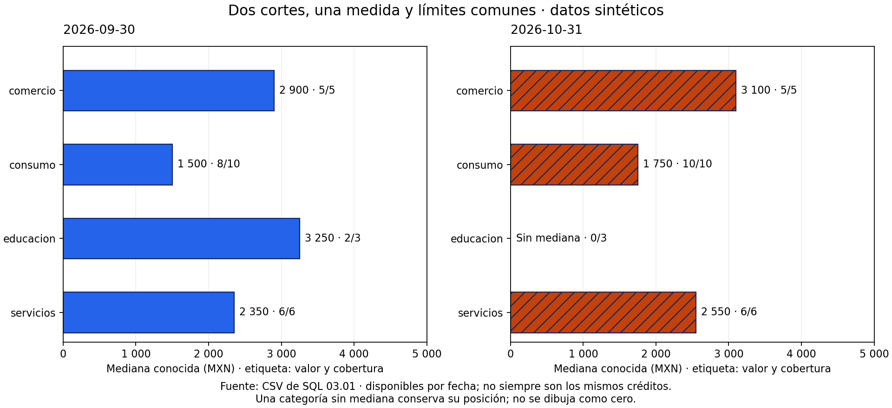
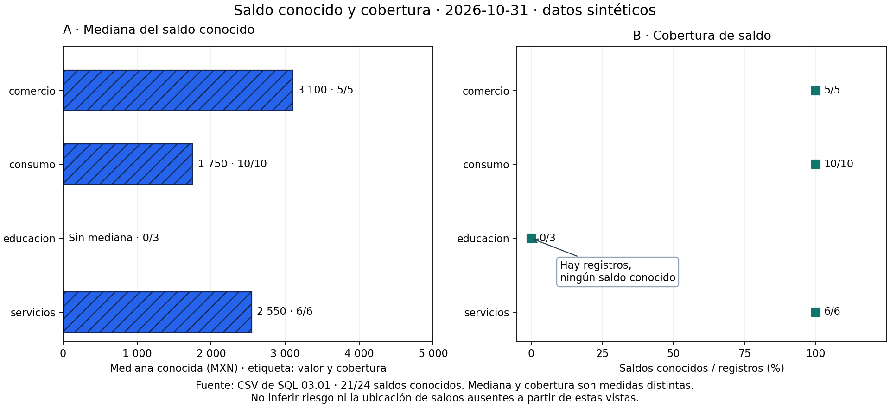

04.06 — Composición y exportación
MÓDULO 04 / 04.06
Contenido / Visualización en Python
Inicio / Módulo 04 / Lección 04.06
| Tu sesión | Qué prepararás o comprobarás |
|---|---|
| Meta | Componer paneles y exportar una entrega legible con contexto |
| Necesitas | Pandas/Matplotlib y fuentes compartidas; Altair no es necesario aquí |
| Evidencia | Código, tablas, PNG/SVG y nota de lectura y dimensiones |
Preparación · Material de apoyo · Ir al lab · Comprobar
Propósito
Preparar una figura que otra persona pueda leer fuera de tu sesión de trabajo. Componer significa organizar varias vistas con una relación clara; exportar significa guardar una entrega con tamaño, formato y contexto adecuados para su destino. Una figura guardada sin errores todavía necesita revisión de lectura.
Antes de empezar
Completa 04.05 — Escalas, etiquetas y accesibilidad y su lab. Reutiliza Figure y Axes de 04.02, comparaciones de 04.03 y medianas de 04.04. No necesitas una herramienta de diseño ni aprender otra biblioteca de gráficos.
Práctica principal: vistas múltiples, ejes comparables, anotaciones, espacio, PNG/SVG y cierre de figuras. Ampliación: recorte ajustado, fondos transparentes y exportación para impresión. Las ampliaciones no bloquean avanzar.
Qué vas a aprender
- Elegir una composición según la comparación que necesita el público.
- Compartir ejes cuando representan lo mismo y conservar unidades distintas.
- Añadir una anotación que explique un dato sin cubrirlo ni inventarlo.
- Relacionar pulgadas, píxeles y resolución para dimensionar un PNG.
- Elegir entre PNG y SVG y revisar el archivo en su destino.
- Exportar desde una Figure identificada, conservar entregas anteriores y cerrar recursos.
- Compartir código, tablas y lectura textual junto con la imagen.
Material de apoyo
| Recurso | Para qué sirve | Uso |
|---|---|---|
| Script de ejemplo | Construir composiciones y exportaciones comprobadas | Para el recorrido |
| Fuentes de SQL | Consultar créditos y cortes utilizados | Entradas compartidas |
| Entrega PNG | Contrastar medianas y cobertura en dos paneles | Para observar |
| Entrega SVG | Comparar formatos de la misma composición | Para observar |


Las figuras incluidas sirven para observar y contrastar. Abre el script cuando el recorrido lo indique para regenerar o practicar; conserva las fuentes y las entregas anteriores y utiliza los destinos de práctica indicados.
Contexto y datos del recorrido
El script composition.py lee los CSV sintéticos originales de SQL 03.01. Reutiliza el lector y los cuartiles de 04.04; no recalcula limpieza con otra regla ni modifica la base SQLite. La organización interna del script se profundizará en Python aplicado, no es una nueva tarea de esta sección.
Hay 24 créditos por corte. Las tablas comprobadas para las composiciones son:
| Segmento | Septiembre: mediana MXN (conocidos/registros) | Octubre: mediana MXN (conocidos/registros) |
|---|---|---|
| comercio | 2 900 (5/5) | 3 100 (5/5) |
| consumo | 1 500 (8/10) | 1 750 (10/10) |
| educacion | 3 250 (2/3) | Sin mediana (0/3) |
| servicios | 2 350 (6/6) | 2 550 (6/6) |
Cada fecha tiene 21 saldos conocidos entre 24 registros, pero no necesariamente los mismos créditos. La comparación describe medianas disponibles: no estima un cambio individual ni mide riesgo. La mediana es un valor central, no una suma. Los tres ausentes de octubre pertenecen a educación; el cero de consumo sigue siendo un saldo conocido válido.
La entrega incluirá dos composiciones, PNG a dos resoluciones, SVG, tablas de comprobación, registro de formatos y una nota de lectura. Los archivos de práctica se generan en output/; las vistas curadas de esta lección se conservan en assets/.
1. Antes de crear paneles, define qué relación mostrarás
Varios gráficos juntos no forman automáticamente una explicación. Decide qué pregunta responde cada panel y por qué conviene verlos juntos. En esta práctica:
| Composición | Pregunta del primer panel | Pregunta del segundo | Relación |
|---|---|---|---|
| Comparación entre cortes | ¿Qué medianas conocidas había en septiembre? | ¿Cuáles hay en octubre? | Misma medida y segmentos; distintas fechas |
| Figura de entrega | ¿Cuál es la mediana conocida de octubre? | ¿Qué proporción de saldos conocemos? | Medida y cobertura sobre el mismo corte |
Una disposición horizontal facilita seguir un segmento de izquierda a derecha. En una columna estrecha, dos paneles apilados pueden resultar más legibles; hay que reorganizarlos desde código, no comprimir una figura ancha hasta que las letras sean diminutas. Más paneles exigen más espacio y más atención: no agregar un histograma o una dispersión solo porque caben.
El orden de lectura también orienta la explicación. Usa títulos de panel o letras A/B cuando necesites referirte a cada vista en el texto. Mantén nombres y orden de segmentos comunes. Si ordenas cada panel por su valor, una misma fila puede representar segmentos distintos y dificultar la comparación.
2. Una medida en dos fechas: límites comunes

Lectura sin imagen: las medianas conocidas son las de la tabla anterior. Los dos paneles tienen el mismo rango horizontal, de 0 a 5 000 MXN, y el mismo orden vertical. Septiembre usa barras lisas y octubre, barras con trama; las fechas escritas identifican cada panel. Educación no tiene barra de octubre.
En esta composición compartimos x porque ambos ejes horizontales muestran la misma medida, unidad y escala. Compartimos y porque las posiciones verticales representan los mismos segmentos. El rango deja espacio para etiquetas y todas las barras parten de cero, como se justificó en 04.05.
import matplotlib.pyplot as plt
fig, axes = plt.subplots(
1, 2, # Una fila, dos columnas.
figsize=(12, 5.5), # Tamaño total de la Figure en pulgadas.
sharex=True, sharey=True,
layout="constrained",
)
izquierda = axes[0]
derecha = axes[1]
izquierda.set_xlim(0, 5000) # El límite se comparte con el otro Axes.axes contiene los dos Axes; sus posiciones no son datos. Este fragmento prepara la estructura, pero aún no dibuja las medianas. La función comparison_figure del script dibuja tablas ya preparadas con draw_medians, sin cambiar sus valores.
Compartir ejes enlaza límites y escalas; no concilia automáticamente las bases. Necesitas verificar la medida y la población antes de dibujar. Además, Matplotlib puede ocultar etiquetas repetidas en ejes compartidos: no desaparecieron datos. El ejemplo las vuelve a mostrar con ax.tick_params(axis="y", labelleft=True) para que ambos paneles puedan leerse directamente.
No compares alturas o longitudes de paneles con límites distintos sin avisarlo. Tampoco unas las barras de educación entre fechas como si un saldo ausente fuera cero. Si la pregunta pide movimientos de los mismos créditos, vuelve a los pares conocidos de 04.03.
3. Medida y cobertura: compartir categorías, conservar unidades

El panel A muestra medianas en MXN. El B muestra porcentajes de saldos conocidos entre registros. Se comparten las categorías verticales, no el eje horizontal: 3 100 MXN y 100 % no son magnitudes comparables. Una posición igual en los dos paneles no significa valor igual ni asociación causal.
fig, axes = plt.subplots(
1, 2, figsize=(12, 5.5), sharey=True, layout="constrained"
)
axes[0].set_xlabel("Mediana conocida (MXN)")
axes[1].set_xlabel("Saldos conocidos / registros (%)")
# No se añade sharex=True: los ejes horizontales tienen unidades distintas.La cobertura de octubre es 100 % para comercio, consumo y servicios y 0 % para educación. Globalmente es 21/24 = 87,5 %. No promediar sin ponderación los cuatro porcentajes de grupo: (100 + 100 + 0 + 100)/4 = 75 % responde otra pregunta, asignando el mismo peso a grupos de tamaños distintos.
El panel B dibuja 0 % para educación porque existen tres registros y conocemos cero saldos. El panel A no dibuja mediana cero: no puede calcularla sin valores. Si no hubiera registros, la cobertura sería indefinida, pues el denominador sería cero. El script muestra «Sin registros» y conserva una ausencia numérica.
El rango de cobertura se extiende de −5 a 125 para dar margen a puntos y texto, pero las marcas numéricas van de 0 a 100. Ese margen no autoriza coberturas negativas ni superiores al 100 %; los conteos proceden de las tablas verificadas. Los valores de mediana tampoco son porcentajes de cartera.
4. Anotaciones: separar el dato y la explicación
Una anotación conecta una afirmación breve con un dato concreto. En la entrega, la flecha apunta al 0 % de educación y explica «Hay registros, ningún saldo conocido». No apunta a una mediana inventada y no afirma que el saldo sea cero.
axes[1].annotate(
"Hay registros,\nningún saldo conocido",
xy=(0, 2), # Dato: cobertura 0 %, segmento en posición 2.
xytext=(28, -42), # Desplazar el texto respecto al dato.
textcoords="offset points",
arrowprops={"arrowstyle": "->"},
)xy señala la posición del dato en el Axes. xytext ubica el texto; aquí se interpreta en puntos de desplazamiento gracias a textcoords. Un punto tipográfico es 1/72 de pulgada. Así movemos la explicación sin sumar MXN ni porcentajes al dato. \n divide la explicación en dos líneas; la flecha enlaza ambas ubicaciones. Cambiar el desplazamiento solo mueve el texto.
Para un mensaje general, puedes usar coordenadas relativas al panel, como en 04.02: ax.text(0.5, 0.5, "Sin registros", transform=ax.transAxes) coloca texto en el centro del Axes. No confundir esas coordenadas 0–1 con datos porcentuales. Un título general pertenece a la Figure, mientras una anotación de cobertura pertenece al Axes que muestra cobertura.
Escribe pocas anotaciones y comprueba que la flecha señala el dato correcto. No cubras puntos, valores o leyendas; no resaltes como «anomalía» un valor que no revisaste. Una anotación puede atraer atención, pero no aporta por sí sola evidencia causal ni estadística. El texto extenso vive junto a la figura.
5. Espacio para títulos, ejes y etiquetas
layout="constrained" ayuda a distribuir espacio entre paneles y sus elementos. No garantiza legibilidad a cualquier tamaño: un texto largo o demasiados paneles pueden exceder el espacio disponible. Revisa el resultado después de guardar. En esta práctica usamos esa estrategia desde plt.subplots; no añadimos tight_layout() después, pues puede desactivar el ajuste elegido.
La composición tiene tres niveles de texto:
ax.set_title(...): identifica la pregunta de un panel.fig.suptitle(...): nombra el conjunto y el corte.fig.supxlabel(...): coloca aquí una nota común debajo, con fuente y límite. Aunque el nombre alude a una etiqueta global de x, el ejemplo lo usa para una nota breve; cada panel conserva su etiqueta de unidad.
Las etiquetas numéricas tienen espacio a la derecha porque el límite deja margen. No extenderlo tanto que todas las diferencias sean imperceptibles. Si los nombres son largos, las barras horizontales permiten leerlos sin girar palabras; una abreviatura requiere explicación. Si falta espacio, amplía o reorganiza la composición antes de reducir demasiado la letra.
Al revisar la entrega mira bordes y cruces: títulos cortados, notas fuera del lienzo, flechas sobre etiquetas, números que chocan con un punto y etiquetas de ejes de un panel que invaden al otro. No basta con que el código termine.
6. Tamaño, resolución y píxeles: tres decisiones relacionadas
figsize=(ancho, alto) usa pulgadas. En un PNG, dpi fija cuántos píxeles se generan por pulgada nominal. Sin recorte adicional:
ancho en píxeles = ancho en pulgadas × dpi
alto en píxeles = alto en pulgadas × dpiSi el producto no es entero, el raster se limita a una cantidad entera de píxeles; el script registra la parte entera esperada y se comprueba el archivo. Los tamaños y resoluciones predeterminados de esta práctica dan productos enteros.
Nuestra Figure mide 12 × 5,5 pulgadas. Al exportarla:
| Archivo | Tamaño nominal | Resolución PNG | Dimensiones esperadas |
|---|---|---|---|
| entrega_160.png | 12 × 5,5 pulgadas | 160 dpi | 1 920 × 880 píxeles |
| entrega_320.png | 12 × 5,5 pulgadas | 320 dpi | 3 840 × 1 760 píxeles |
| entrega.svg | 12 × 5,5 pulgadas | No fija una cuadrícula de píxeles para estas formas | Escalable; tamaño declarado y viewBox |
Duplicar dpi duplica cada dimensión del PNG y cuadruplica el número de píxeles. El tamaño del archivo en bytes no necesariamente se cuadruplica: depende de compresión y contenido. Tampoco aparecen nuevos registros o mayor precisión analítica. Si ambos PNG se muestran con el mismo ancho en pantalla, la letra ocupa aproximadamente el mismo espacio; el segundo aporta más detalle de dibujo.
Por ejemplo, si la figura se presenta a 960 píxeles de ancho, el primer PNG aporta dos píxeles de imagen por cada píxel de ese ancho de presentación; el segundo aporta cuatro. La apariencia final depende también del dispositivo y de cómo el visor redimensiona. Aumentar dpi no arregla una composición ilegible que se encoge demasiado en el destino.
La letra se define en puntos tipográficos, no como un número fijo de píxeles. Cambiar figsize da más o menos espacio al contenido; cambiar dpi cambia el detalle del raster. Para ajustar una figura a una columna estrecha, prueba una composición vertical con textos adecuados, no solo una exportación de más dpi.
Para impresión, sigue el tamaño y resolución solicitados por el destino; 300 dpi es una referencia habitual para raster, no una regla universal ni un requisito de este lab. Centímetros / 2,54 = pulgadas, si tu entrega se mide en centímetros. Esta sección se completa con revisión en pantalla.
7. PNG o SVG según el destino
| Formato | Qué conserva | Ventaja en esta práctica | Qué comprobar |
|---|---|---|---|
| PNG | Cuadrícula de píxeles | Fácil de insertar en visores, Markdown y presentaciones | Dimensiones y lectura al tamaño final |
| SVG | Formas y trazados vectoriales | Ampliar líneas, barras y texto sin una cuadrícula fija | Compatibilidad, tipografía y contenido al abrirlo |
SVG no es un CSV ni convierte la figura en un análisis interactivo. Puede contener imágenes rasterizadas si el gráfico las usa; nuestras barras y puntos se exportan como elementos vectoriales. Cambiar dpi no aumenta la resolución de esos trazados, aunque sí puede afectar componentes rasterizados en otras figuras. Un SVG con miles de objetos tampoco tiene garantizado menor tamaño que un PNG.
Puedes abrir la versión SVG de la figura de entrega para contrastarla con la vista PNG de esta lección antes de regenerarla.
Según la configuración de Matplotlib, el texto del SVG puede guardarse como trazados de letras. Eso preserva su forma sin depender igual de una fuente instalada, pero no garantiza texto seleccionable, fácil de editar ni accesibilidad automática. Acompaña ambos formatos con descripción y tabla, como en 04.05.
No renombres un PNG a .svg para cambiar el formato. savefig puede inferirlo por la extensión o recibir format; si ambos se contradicen, la extensión puede resultar engañosa. El ejemplo usa extensiones coherentes y fondo blanco explícito para que texto y tramas se revisen sobre un fondo conocido.
Ampliación: transparent=True permite fondos transparentes en contextos adecuados, pero hay que comprobar contraste sobre el fondo de destino. Para esta entrega usamos transparent=False; no cambiamos colores según una suposición sobre dónde la persona abrirá la figura.
8. Guardar la Figure correcta y cerrar después
Guarda con fig.savefig(...): tienes una referencia explícita a la composición. Al generar varias figuras, depender de «la figura actual» puede exportar otra vista. Conserva la separación practicada en 04.02: preparar tabla → dibujar → guardar → cerrar. La función que dibuja no necesita escribir CSV ni cerrar el Axes.
# fig ya contiene la composición revisada; usa una carpeta de entrega nueva.
try:
fig.savefig("entrega_160.png", dpi=160, facecolor="white", transparent=False)
fig.savefig("entrega_320.png", dpi=320, facecolor="white", transparent=False)
fig.savefig("entrega.svg", facecolor="white", transparent=False)
finally:
plt.close(fig)El mismo objeto puede guardarse en varios formatos antes de cerrarlo. finally asegura el cierre incluso si falla el guardado. Cerrar libera la referencia que mantiene pyplot; no borra las imágenes ni los CSV y no reinicia el entorno. Usa plt.close(fig), no plt.close("all"), para conservar otras figuras de la sesión. Guardar tampoco requiere abrir una ventana con plt.show().
En el script, cada entrega exige una carpeta nueva: no sobrescribe una anterior. Guarda los datos usados, lectura.md y formatos.csv, que registra formato, pulgadas, dpi cuando aplica, píxeles esperados y bytes. Así puedes explicar qué compartiste y con qué parámetros sin depender de memoria de la sesión.
Ampliación sobre recorte: bbox_inches="tight" intenta ajustar el borde al contenido y pad_inches controla el margen. Eso puede cambiar las dimensiones finales respecto a figsize × dpi; no promete el mismo tamaño nominal. Tampoco resuelve superposiciones entre textos. El ejemplo conserva el lienzo completo sin recorte, mediante una configuración local de guardado; no modifica ajustes globales de tu sesión.
9. Reconstruir y revisar los archivos
Usa el entorno elegido en 00.05, ya activado. Referencias: pandas 2.3.3 y Matplotlib 3.10.7. La comprobación local usa pandas 2.3.3 y Matplotlib 3.10.6; no se agregan dependencias. Desde la raíz del repositorio, elige un recorrido completo.
PowerShell
# Conda o venv/pip ya activado:
python curriculum/04_visualization_python/06_composition_export/composition.py --cut 2026-10-31 --dpi 160 --output curriculum/04_visualization_python/06_composition_export/output/octubre
# Alternativa para uv: ejecutar en lugar del comando anterior.
uv run --locked python curriculum/04_visualization_python/06_composition_export/composition.py --cut 2026-10-31 --dpi 160 --output curriculum/04_visualization_python/06_composition_export/output/octubreBash/Zsh
# Conda o venv/pip ya activado:
python curriculum/04_visualization_python/06_composition_export/composition.py --cut 2026-10-31 --dpi 160 --output curriculum/04_visualization_python/06_composition_export/output/octubre
# Alternativa para uv: ejecutar en lugar del comando anterior.
uv run --locked python curriculum/04_visualization_python/06_composition_export/composition.py --cut 2026-10-31 --dpi 160 --output curriculum/04_visualization_python/06_composition_export/output/octubreSe generan tres PNG, un SVG, cuatro CSV (corte, resumen, comparacion y formatos) y lectura.md. --cut elige la fecha de entrega y su resumen; comparacion conserva septiembre/octubre. --dpi elige la primera resolución PNG y se exporta también el doble. Para otra ejecución, usa otra carpeta nueva. Las vistas curadas de la lección corresponden a octubre con 160 dpi.
Comprobación gradual:
- Concilia corte.csv: 24 registros, 21 conocidos y 3 ausentes. El cero cuenta como conocido.
- Comprueba las medianas de resumen.csv contra los saldos del corte y la tabla inicial.
- Recalcula cobertura por segmento y global; distingue 0/3 de 0/0.
- Coteja paneles, etiquetas y flecha con esas tablas. Verifica límites comunes en comparacion y unidades separadas en entrega.
- Abre ambos PNG y consulta dimensiones en tu visor o propiedades del archivo; verifica formatos.csv. Abre entrega.svg en un visor compatible, por ejemplo un navegador, y amplía para revisar texto, tramas y flecha.
- Revisa al tamaño de presentación final, además de ampliar. Conserva lectura.md junto con las imágenes y las tablas. Si falla una exportación, la existencia de una carpeta parcial no demuestra una entrega completa.
Práctica
Realiza el lab 04.06 para componer paneles y revisar una exportación fuera de la sesión original.
Evidencia y criterio de salida
| Conserva | Comprueba | Explica |
|---|---|---|
| Código, tablas y composición propia | Relación entre paneles, medidas, ejes y datos | Por qué cada panel existe y qué comparten sus escalas |
| PNG/SVG y nota de lectura | Formatos, dimensiones y legibilidad en el destino | Cómo se relacionan tamaño, resolución y píxeles y qué contexto acompaña la figura |
Puedes avanzar cuando expliques por qué cada panel existe, compruebes sus datos y ejes, exportes una entrega legible y cotejes formatos y dimensiones. Entrega código, tabla, imagen y comentario de población, medida, fuente y límites.
Quien aprende realiza y explica la práctica; su compañero revisa. Tu compañero abre la exportación y pregunta qué población y medida describe cada panel. Guarda evidencia, ayudas y dudas en una nota personal junto a tu práctica. PROGRESS.md conserva el desarrollo editorial; disponer del material no acredita por sí solo aprendizaje completado.
No hay proyecto ni checkpoint implementado asociado a esta lección.
Referencias
Código, composiciones y explicaciones propios de DS Track. Se consultaron las fuentes primarias de Matplotlib; las páginas stable pueden mostrar versiones posteriores a la referencia 3.10.7. No se copiaron imágenes ni ejemplos completos.
Siguiente paso
Después de la práctica y su comprobación, continúa con 04.07 — Altair: visualización declarativa.